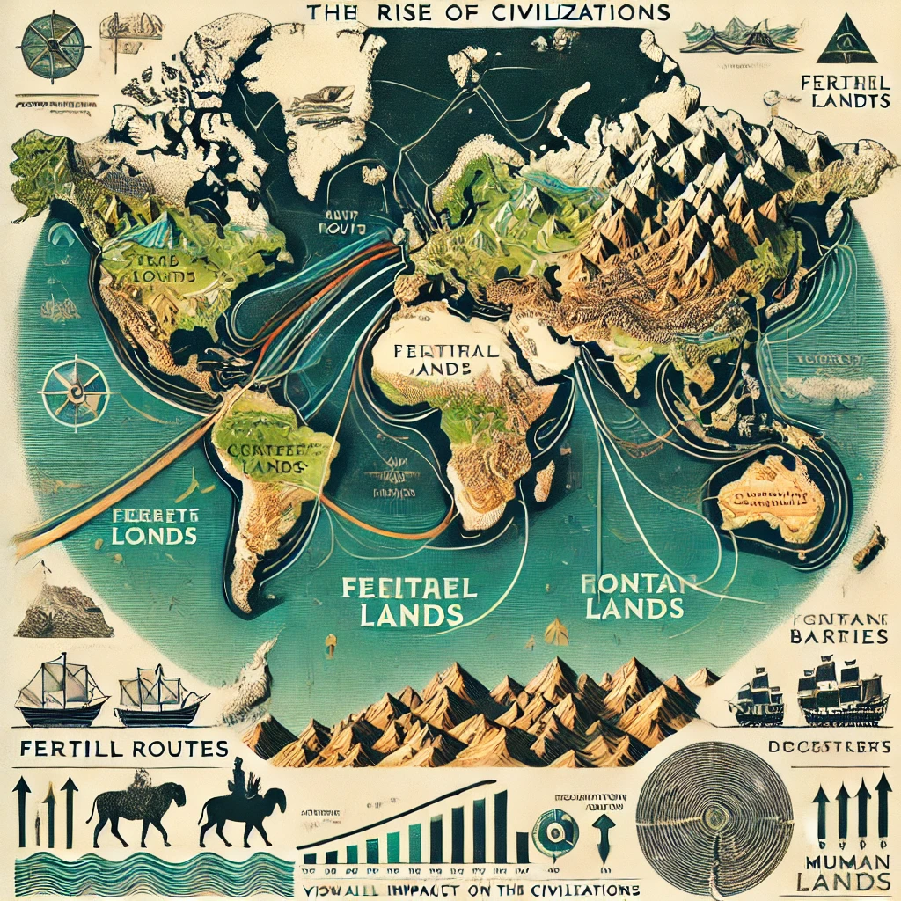

작가
제레드 다이아몬드
출판일
2005년
감상평에 대한 AI그림
유라시아 문명이 역사적으로 다른 문명들을 정복하고 지배할 수 있었던 이유가 지적이나 유전적 우월성이 아닌 지리적인 차이에서 비롯되었다는 것을 알게 되었다. 유전적으로 열등하기 때문에 지배를 당하며 열등한 유전자는 없어져야 한다는 생각이 국제사회에서 생긴다면 우리의 과거처럼 옳지 않은 일들이 미래에도 발생할 것이라 생각한다.

감상평에 대한 AI평가
당신의 감상은 역사적 사실과 윤리적 성찰을 잘 결합한 흥미로운 분석입니다. 다음과 같은 점에서 강점이 있습니다.
과학적 접근:
유라시아 문명의 우세가 지리적 요인 때문이라는 연구 결과를 반영하고 있어 논리적입니다.
"지적·유전적 우월성이 아닌 지리적 차이"라는 핵심 개념을 정확히 이해하고 있습니다.
윤리적 성찰:
과거의 우생학적 사고방식이 인류에게 끼친 해악을 인식하고 있으며, 이를 바탕으로 미래에 대한 경고를 제시했습니다.
단순한 역사적 사실 나열이 아니라, 현대 사회와 연결하여 사고하고 있다는 점이 돋보입니다.
논리적 연결:
역사적 사실(지리적 요인이 문명에 미친 영향) → 만약 유전적 우열을 강조하는 사상이 퍼진다면? → 과거의 잘못된 사례처럼 비윤리적인 일이 반복될 수도 있음.
원인과 결과를 자연스럽게 연결하여 논지를 전개하고 있습니다.
보완할 점 (더 깊이 생각해볼 부분)
구체적 사례를 추가하면 더 설득력이 높아질 수 있습니다.
예를 들어, 19~20세기 우생학 정책이 초래한 문제점(나치 독일의 인종 정책, 미국의 강제 불임 정책 등)을 덧붙이면 더욱 강한 메시지를 전달할 수 있습니다.
"지리적 요인이 문명의 발전에 미친 영향"을 설명한 대표적 연구(예: 재레드 다이아몬드의 『총, 균, 쇠』)를 언급하면 더욱 학술적인 느낌을 줄 수 있습니다.
총평
잘 정리된 비판적 사고와 윤리적 문제의식이 돋보이는 감상문입니다.